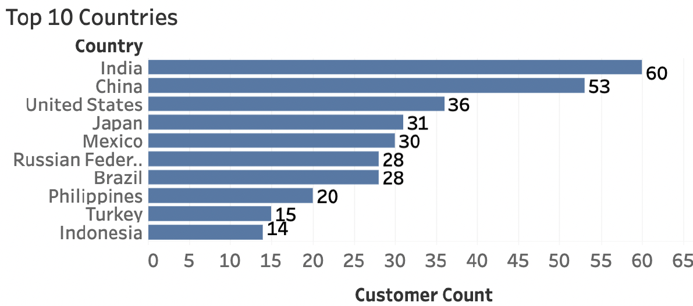
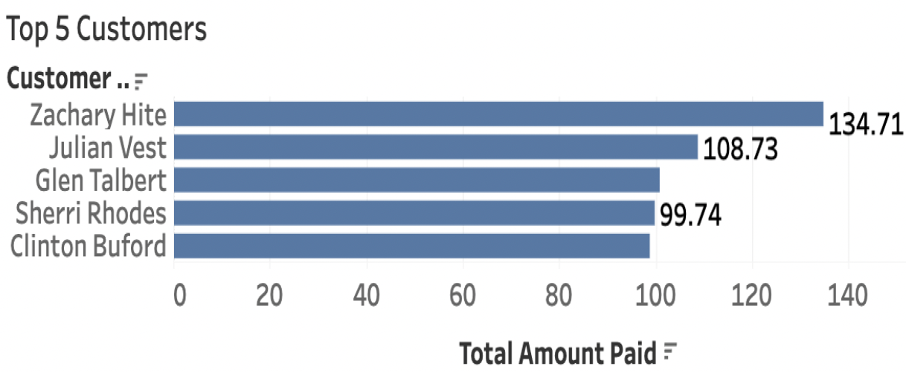

Rockbuster Strategy Analysis (SQL)
SQL • Tableau • Revenue analysis • Market prioritization
Project Overview
This project uses SQL to analyze Rockbuster’s rental database to identify revenue drivers, customer distribution, and geographic opportunities. The goal was to generate insights that could support a data-informed business strategy for growth and retention.
Problem
Rockbuster needed a clearer picture of which films and customer segments generate the most revenue, where demand is strongest, and how to prioritize markets.
Data
The dataset includes customer data, rentals, payments, film information, inventory, and geographic location fields. Analysis was completed using SQL queries and visualized in Tableau.
Process
- Joined relational tables using SQL
- Calculated revenue by customer, film, and geography
- Identified revenue concentration patterns
- Translated findings into business recommendations
Example SQL Queries
Query 1: Identify top revenue customers and their location
SELECT cu.customer_id, cu.first_name, cu.last_name, co.country, ci.city, SUM(p.amount) AS total_amount_paid FROM customer AS cu JOIN address AS a ON cu.address_id = a.address_id JOIN city AS ci ON a.city_id = ci.city_id JOIN country AS co ON ci.country_id = co.country_id JOIN payment AS p ON cu.customer_id = p.customer_id GROUP BY cu.customer_id, cu.first_name, cu.last_name, co.country, ci.city ORDER BY total_amount_paid DESC LIMIT 5;
This query joins customer, payment, and geographic tables to calculate total revenue per customer and identify the highest-value customers and where they are located.
Query 2: Customer distribution by country
SELECT co.country, COUNT(DISTINCT cu.customer_id) AS customer_count FROM customer AS cu JOIN address AS a ON cu.address_id = a.address_id JOIN city AS ci ON a.city_id = ci.city_id JOIN country AS co ON ci.country_id = co.country_id GROUP BY co.country ORDER BY customer_count DESC LIMIT 10;
This query aggregates customers by country to identify geographic markets with the largest customer base and potential revenue opportunities.
Key Insights
- Revenue is concentrated in a small subset of customers and locations
- A limited number of markets drive a large share of total revenue
- High-value customers are clustered geographically
Geographic Revenue Concentration

Customer Revenue Concentration

Recommendations
- Prioritize high-value customer retention campaigns
- Focus investment on top-performing markets
- Standardize recurring SQL reports for ongoing performance tracking
Conclusion
This project demonstrates how SQL analysis and Tableau visualization can directly inform strategic decision-making by identifying revenue concentration and growth opportunities.